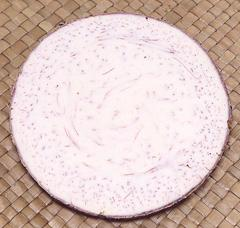

Here We have a serious identification problem. All the Philippine and Southeast Asian markets here in Los Angeles have these corms, often labeled "Big Taro". Wikipedia and Creative Commons have totally failed me here. My 5 fine Philippine cookbooks failed me even worse. Only one even admitted that Taro Corms of any kind were edible, discussing only the leaves. Philippine agricultural pages did no better.
The only Giant Alocasia I can find any information on anywhere is Alocasia macrorrhizos, but no photos, YouTube videos, or descriptions show or describe anything even remotely resembling the corm in the photo. Botanists and gardeners, of course, have no interest in anything but leaves and flowers, so barely mention corms. I have concluded that nobody actually knows much about these.
Here I will discuss only the characteristics of the Corms sold here in Los Angeles, whatever they may be, under the name "Big Taro", the only name I can vouch for. The photo specimen was 10-1/4 inches long, 4-3/4 inches diameter and weighed 4 pounds 6 ounces (2 kg). They get quite a bit larger, but this was the largest one I could find that hadn't been cut to make its size more manageable.
More on Arums.
 To the left is a slice of the Corm in the photo at the top of this page. Cut into 3/4 to 1 inch cubes it cooked in just 10 minutes after coming to a boil, and was crumbly in texture. The flavor was pleasant and surprisingly sweet. The crumbling mitigates against using in soups and stews. It seems probably it is always used as a mash. There was no hint of oxalic acid or calcium oxalate, even in the peel.
Another person who was also only able to identify this corm as "Big Taro"
had not seen it before. He just popped the whole corm into the Microwave
and nuked it. He was quite happy with the result, which was fluffy like
mashed potatoes, but drier.